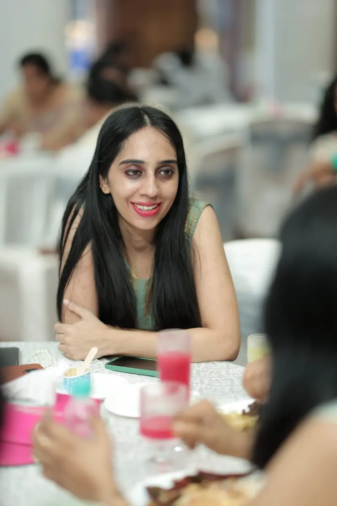
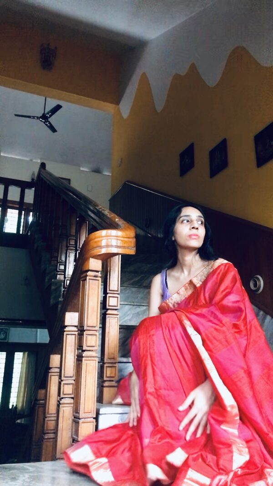

01
A face that reads two ways
Open and smiling in one frame, quiet and inward in the next. The same face can play warm or guarded.
For you: one actor for the warm and the guarded.

A Kerala production — Actor
A face that reads two ways. A voice in four languages. A painter’s eye on set.
Malayalam · Tamil · Hindi · English
SC. 01 / TAKE 1 / KOCHI, IN
SC. 02 — WHO SHE IS
Della Antony
Actor from Kerala, India
Playing age 22–30 · 164 cm · slim
Dark brown eyes · dark brown, thick, hip-length hair
Malayalam and English — native
Hindi — working · Tamil — conversational · German — A2
Dance · piano · four-wheel driving
Stage from school to college · emcee for three years
Self-tape on one day’s notice
ഡെല്ല ആന്റണി
കേരളത്തിൽ നിന്നുള്ള അഭിനേത്രി
അഭിനയിക്കാവുന്ന പ്രായം 22–30 · ഉയരം 164 സെ.മീ. · മെലിഞ്ഞ ശരീരം
ഇരുണ്ട തവിട്ടുനിറമുള്ള കണ്ണുകൾ · ഇരുണ്ട തവിട്ടുനിറത്തിലുള്ള, കട്ടിയുള്ള, അരവരെ നീളമുള്ള മുടി
മലയാളവും ഇംഗ്ലീഷും — മാതൃഭാഷ
ഹിന്ദി — പ്രവർത്തനക്ഷമം · തമിഴ് — സംഭാഷണ നിലവാരം · ജർമ്മൻ — A2
നൃത്തം · പിയാനോ · ഫോർ-വീൽ ഡ്രൈവിംഗ്
സ്കൂൾ മുതൽ കോളേജ് വരെ വേദി · മൂന്ന് വർഷം അവതാരക
ഒരു ദിവസത്തെ അറിയിപ്പിൽ സെൽഫ്-ടേപ്പ്
डेला एंटनी
केरल, भारत की अभिनेत्री
किरदार की उम्र 22–30 · कद 164 सेमी · छरहरी
गहरी भूरी आँखें · गहरे भूरे, घने, कमर तक लंबे बाल
मलयालम और अंग्रेज़ी — मातृभाषा
हिंदी — कामकाजी · तमिल — बातचीत लायक · जर्मन — A2
नृत्य · पियानो · फ़ोर-व्हील ड्राइविंग
स्कूल से कॉलेज तक मंच · तीन साल एमसी
एक दिन के नोटिस पर सेल्फ-टेप
SC. 03 — WHAT SHE BRINGS
01
Open and smiling in one frame, quiet and inward in the next. The same face can play warm or guarded.
For you: one actor for the warm and the guarded.
02
Dark brown, thick and hip-length, so a period piece or a village story can start with her look.
For you: long hair, ready for period work.
03
Malayalam and English, both native. Hindi at working level, Tamil conversational, German A2. British accent as a skill.
For you: Malayalam and English roles at native ease.
04
Based in Kerala, with dance behind her, and at ease in a saree at a family function.
For you: Kerala homes and ceremonies that ring true.
05
Stage work from school to college, including Lady Macbeth in school theatre. Emcee for three years.
For you: stage-trained presence, and live hosting.
06
Four-wheel driving is on her list of skills.
For you: scenes that need her driving.
07
A visual artist and designer who paints original abstract oils, and thinks in colour and composition.
For you: a collaborator who reads the frame.
08
Works as a delivery manager, remotely, for a Delhi-based tech company.
For you: reliable on call times; self-tape on one day’s notice.
Range, in stills
FR. 01
Awe
FR. 02
Poised
FR. 03
Tender
FR. 04
Joy
FR. 05
Radiant
FR. 06
Wistful
FR. 07
Unbothered
FR. 08
Lost in thought
SC. 04 — VOICES
Five takes. Four languages. One voice.


SC. 05 — CALL SHEET
SC. 06 — END CARD
Self-tape on one day’s notice · travels anywhere for confirmed work
© Della Antony · All takes shared privately